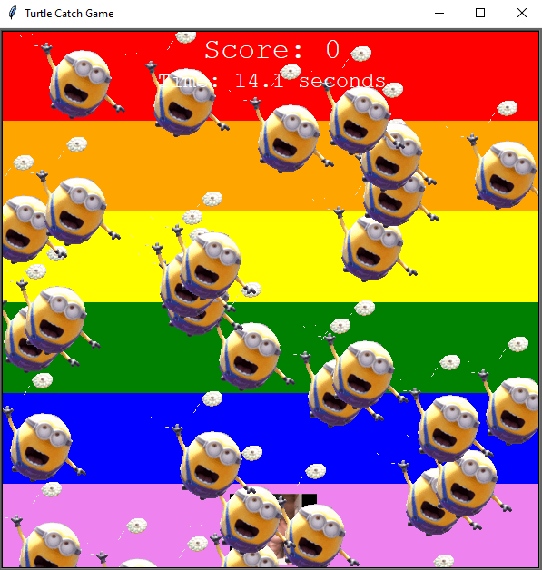
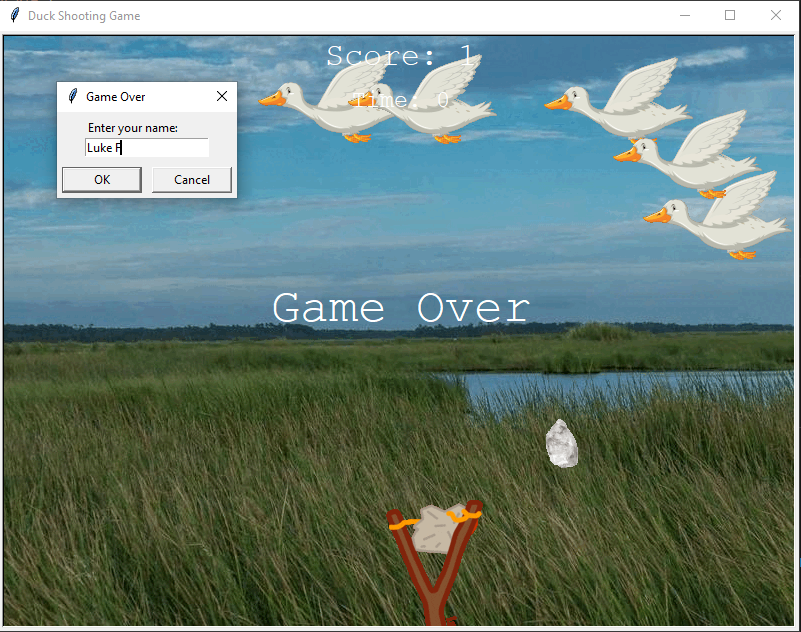
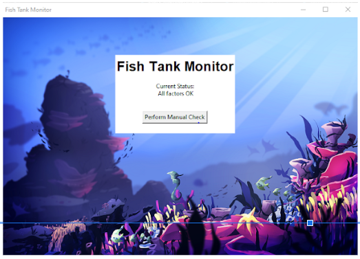
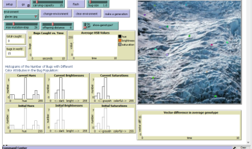

This is my Portfolio Page!

Minion Collecting Game
This is our project that we made using turtle commands. The basics of the game is that you have a controlled character at the bottom of the screen that you can move left and right with your arrow keys. Our character at the bottom is a famous bodybuilder and he is attempting to collect the falling minions to save them from certain doom. We created the background rainbow by using striping commands and the fill commands and just swapping colors. Lastly, we have a timer and a scoreboard, each minion collected is worth 10 points and you have 30 seconds to collect as many minions as possible. When the 30 seconds runs out the program closes.
Duck Hunter Game (Project 2)
This is our second project that we made using turtle commands. The basics of the game is that you use a slingshot at the bottom of the screen to throw rocks at ducks that are flying above you. We incorporated many aspects like a leaderboard that you enter your name in at the end, a timer that has 120 seconds on it, and a scoreboard that tracks how many ducks you have hit with rocks leaving the slingshot. We used a basic background picture of a duck habitat with the bgpic command.
If you would like to see a video that shows me actually playing a round, copy this link into your search bar: https://drive.google.com/file/d/1L2EXswgNpepe7h7cwsX_Pz7pMXq9u-eN/view?usp=sharing
Scratch Project Fire Fishing
This is our fishing game that we made for our scratch project(Dylan, Mark, Luke). The objective of the game is to catch as many fish as possible in the time limit by using the arrow keys on the keyboard to move around the screen.
Fish Tank Project 2.1.6
This is the Fish Tank Project that we made from the instructions on PLTW. We made sure to go step by step and check each segment of code that is causing issues. By going slowly and methodically we saw what the issues are. To fix the problems we ensured Magnesium is the highest value, this made it show too high. After Magnesium, we changed the alkalinity levels and made the value to be okay by testing it in order to change the alkalinity levels. The last thing was the temperature model because we had to ensure that it would be efficient and work. In order to fix the temperature model we made it so the average temperature so it would read high.
Bug Camouflage from Predators
This is our simulation project where we did a simulation of bugs and their camouflage from predators. In different environments bugs will have different camouflage to hide them from predators giving them an advantage.
Modified bits in pictures.

Use data files to create graphs.

Using netlogo do remix of illusions.